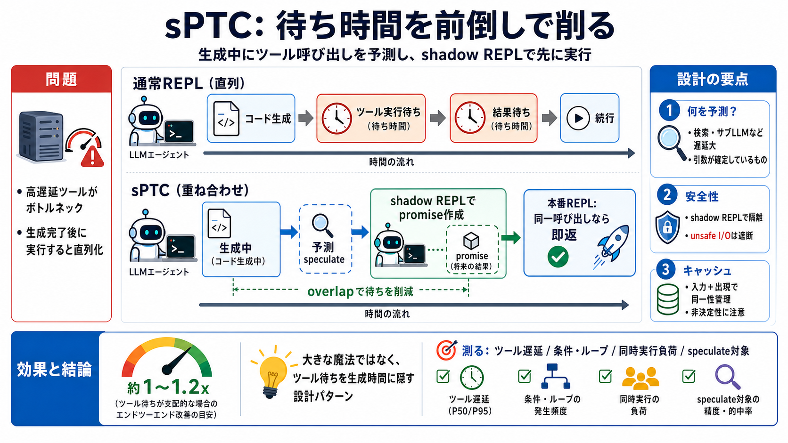

Speculative Programmatic Tool Calling | Alex L. Zhang
Inspired by speculative execution in CPUs and speculative decoding in LLMs, a relatively simple and useful trick I’m pro…

Inspired by speculative execution in CPUs and speculative decoding in LLMs, a relatively simple and useful trick I’m pro…
The results are striking: 48.5% average reduction in task completion time, 1.8x improvement in tool execution throughput…
Programmatic tool calling allows Claude to write code that calls your tools programmatically within a code execution con…
With a coding agent, typical tools would include `edit_file, read_file`, and `search`. If we use programmatic tool calli…
## Description Programmatic tool calling (also called "Code Mode") is where the LLM generates Python code that calls to…